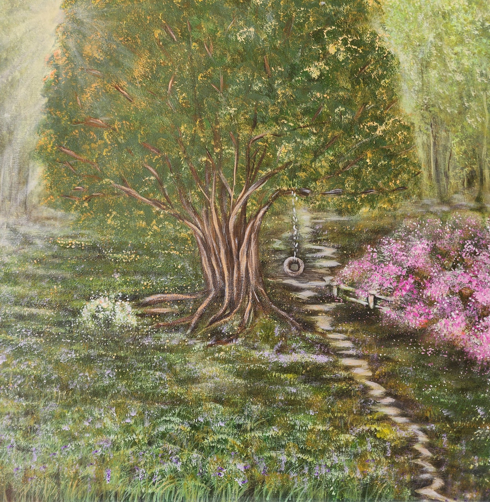

Back to Childhood
$490 AUD
Buy this paintingStep into my memory with "Back to Childhood." This peaceful landscape features a majestic tree and a classic tire swing, bathed in warm, dappled sunlight. Framed by a winding stone path and vibrant blooming bushes, it’s a gentle reminder of carefree days, I had when I was a child, and endless imagination.